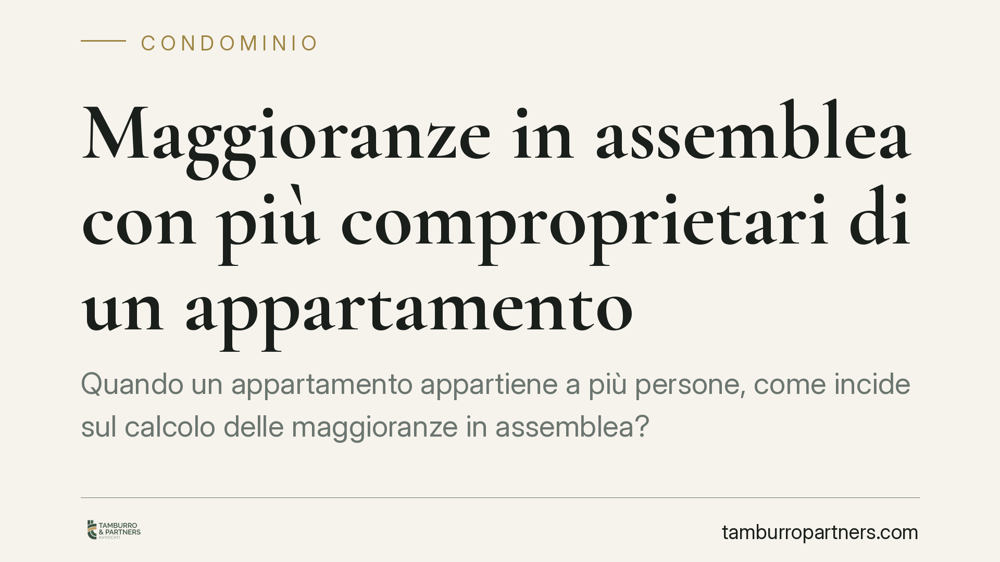

Maggioranze in assemblea con più comproprietari di un appartamento
Quando un appartamento appartiene a più persone, come incide sul calcolo delle maggioranze in assemblea? Il tema tocca quorum costitutivi e deliberativi, la figura del rappresentante unico e gli oneri probatori in caso di impugnazione. Una materia tecnica, ma decisiva: un errore di conteggio può rendere annullabile la delibera e aprire un contenzioso.

Il problema
Un solo appartamento, più proprietari. È una situazione frequentissima: coniugi in comunione, eredi, soci di fatto. In assemblea, però, quel singolo bene resta una sola entità. La domanda operativa è semplice: quante "teste" e quanti millesimi porta in votazione?
La risposta incide su tutto. Dal raggiungimento del quorum costitutivo (quanti partecipanti servono per aprire validamente la seduta) a quello deliberativo (quanti voti servono per approvare), fino alla legittimazione a impugnare la delibera.
Inquadramento normativo
L'art. 1136 c.c. costruisce i quorum su un doppio binario: il numero di partecipanti (le cosiddette "teste") e il valore millesimale delle rispettive proprietà. Entrambi i parametri devono essere soddisfatti, secondo le soglie variabili a seconda dell'oggetto della delibera.
Il principio consolidato in giurisprudenza è che l'unità immobiliare in comproprietà vale una sola testa e porta i millesimi complessivi a essa attribuiti. La pluralità dei titolari non moltiplica né le teste né il valore proporzionale: il bene è uno, la quota di partecipazione è una.
L'art. 67 delle disposizioni di attuazione del codice civile, nel testo vigente dopo la riforma (L. 220/2012), disciplina la rappresentanza. Qualora un'unità appartenga a più proprietari, questi hanno diritto a un solo rappresentante in assemblea, designato dai comproprietari stessi. Se manca l'accordo sulla designazione, il rappresentante è nominato dall'autorità giudiziaria su istanza anche di uno solo dei comproprietari o dell'amministratore.
Quanto all'impugnazione, l'art. 1137 c.c. fissa termini e legittimazione per contestare le delibere annullabili. E qui pesa un dato processuale: chi impugna lamentando un vizio di calcolo delle maggioranze deve provare che il quorum non è stato raggiunto. L'onere della prova grava sull'impugnante.
Partecipazione fisica e unicità del voto
Un punto genera spesso confusione. I singoli comproprietari possono anche presentarsi fisicamente in assemblea: la presenza personale non è di per sé vietata. Ma la presenza non equivale al voto.
Per quell'unità il voto resta uno solo e deve essere espresso in modo unitario, di norma tramite il rappresentante designato. In altre parole: più contitolari possono assistere, ma l'appartamento esprime una sola manifestazione di volontà, pesa per una sola testa e per i suoi millesimi complessivi. La presenza di tre comproprietari non diventa mai tre voti.
Quando i contitolari non trovano una posizione comune, il voto di quell'unità rischia di non poter essere validamente conteggiato: ragione in più per risolvere a monte la questione della rappresentanza.
Implicazioni pratiche
Per l'amministratore, il margine di errore è stretto. Un conteggio che attribuisca più teste o millesimi gonfiati a un'unità in comproprietà espone la delibera all'annullamento. Lo stesso vale per il trattamento del rappresentante non correttamente designato.
Per il condomino comproprietario, invece, conta organizzarsi prima: individuare chi rappresenta l'unità, con quale legittimazione e con quali istruzioni di voto. Arrivare in assemblea senza accordo significa, nei fatti, rischiare di contare poco o nulla.
Anche la scelta del luogo della riunione merita attenzione. La convocazione deve indicare una sede idonea a consentire la partecipazione effettiva di tutti gli aventi diritto; una sede abnorme o ingiustificatamente scomoda può diventare terreno di contestazione.
Cosa fare in concreto
- Aggiornate l'anagrafe condominiale (art. 1130 n. 6 c.c.): per ogni unità in comproprietà annotate tutti i titolari e le rispettive quote.
- Designate il rappresentante unico prima dell'assemblea; se l'accordo manca, attivate la nomina giudiziale prevista dall'art. 67 disp. att. c.c.
- Verificate i quorum su entrambi i parametri: teste (una per unità) e millesimi (complessivi dell'unità), controllando le soglie dell'art. 1136 c.c. per il tipo di delibera.
- Curate il verbale: indicate con precisione presenti, deleghe, rappresentanti e il conteggio di teste e millesimi. Il verbale è la prima prova in caso di impugnazione.
- Controllate la sede: scegliete un luogo idoneo e documentatene la congruità nella convocazione.
In caso di dubbio sulla validità di una convocazione o di una delibera, consigliamo una verifica preventiva, prima che scadano i termini di impugnazione ex art. 1137 c.c. Un controllo tempestivo costa meno di un contenzioso.
---
Contributo informativo a cura di Tamburro & Partners Avvocati - Avv. Giuseppe Tamburro. Non costituisce parere legale.
Ogni condominio ha una storia a sé.
Se gestisci un'amministrazione e vuoi un confronto su una specifica questione condominiale, scrivi allo studio. Ti rispondiamo entro un giorno lavorativo.